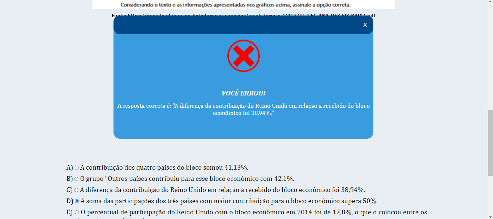
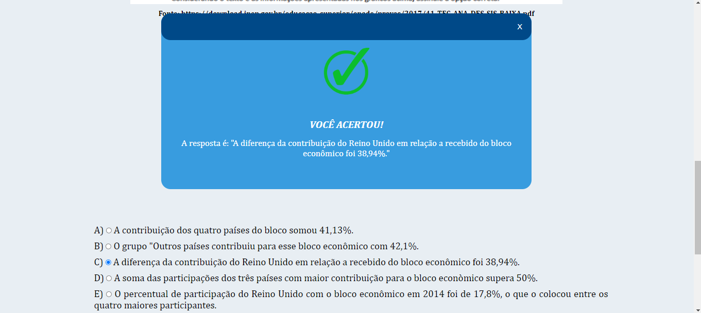

A seguir veja as instruções para o simulado!
Esse simulado é composto de 35 questões de multipla escolhas, com opções de A a E.
Para inicia-lo basta clicar no botão INICIAR SIMULADO.
No topo de cada página você encontrará uma barra para alternar entre as questões de 1 a 35, além de visualizar qual é a questão atual que você está respondendo.
No final da página de cada questão existem 3 botões: CORRIGIR, PRÓXIMO e FINALIZAR.
Ao clicar no botão CORRIGIR após ter selecionado a opção que julga ser a correta, será apresentado se você acertou ou não e a resposta correta para a questão.
Resposta selecionada incorreta:
Resposta selecionada correta:
Ao fechar a janela que apresentou a resposta correta, você retornara para essa página
Em seguida para continuar no simulado basta clicar no botão PRÓXIMO e você será direcionado para a página da próxima questão.
Após ter respondido todas as questões clicar no botão FINALIZAR para encerrar o simulado.
Ao encerrar será contabilizado o total de questões respondidas, o total de questões em branco, o total de questões corretas, o total de acertos e o total de erros, além de apresentar um gráfico com os totais para o candidato, assim como o gabarito oficial do ENADE.
BOM SIMULADO!